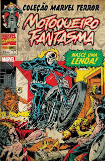
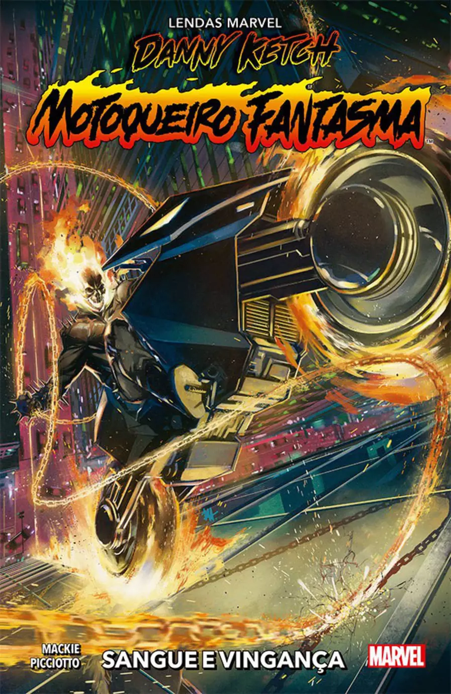
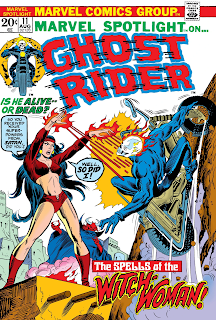

Histórias em Quadrinhos
Motoqueiro Fantasma
Motoqueiro Fantasma

COMBO TRIPLO de lançamentos com o "Motoqueiro Fantasma",
cobrindo 3 gerações do personagem: A fase clássica dos
anos 70 (com as primeiras aventuras de Johnny Blaze);
A sua 2º encarnação (Danny Ketch) sobre RODAS nos
anos 90 (descontando-se o "Ghost Rider" do Velho Oeste, é claro);
e o FINAL de sua fase atual (2023)!
O "Motóca" clássico ganha uma
"EPIC" (com suas 20 primeiras histórias) + Uma edição INÉDITA da
linha: "Lendas Marvel", revisitando a fase Danny Ketch
(sucesso em "Superaventuras Marvel" da Abril) + O Vol. 4
que encerra a fase moderna (Rito de Passagem)!
| Título | Edição | Preço |
|---|---|---|
| Nasce uma Lenda |  | 30R$ |
| Sangue e Vingança |  | 33R$ |
| The spells of the witch |  | 28R$ |
As 5 melhorres HQs do Motoqueiro Fantasma
- Motoqueiro Fantasma: Ressuscitado
- Motoqueiro Fantasma, Wolverine e Justiceiro: Corações Negros
- Ghost Rider: Hammer Lane
- Motoqueiro Fantasma: Ciclo Vicioso
- A Maldição de Jonathan Blaze!
5 curiosidades sobre Motoqueiro Fantasma
- Motoqueiro Fantasma é o nome do personagem aqui no Brasil graças à liberdade criativa da tradução. Em inglês, Rider conta com um significado mais abrangente, como cavaleiro ou um sinônimo de motorista.
- O personagem foi inspirado na popular canção americana "Ghost Riders In The Sky"
- Já se fundiu com o Hulk e Venom para enfrentar Black Heart
- Já participou do Quarteto Fantástico
- O Olhar da Penitência é um dos poderes mais icônicos do Motoqueiro, e simplesmente não funciona em qualquer um. Matt Murdoc é imune ao poder por ser cego, além de ser justo.